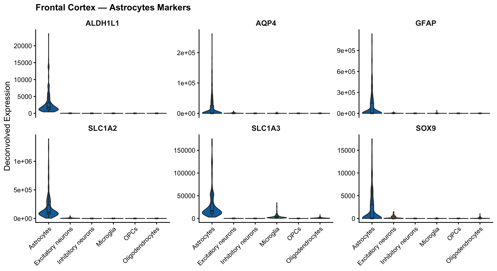
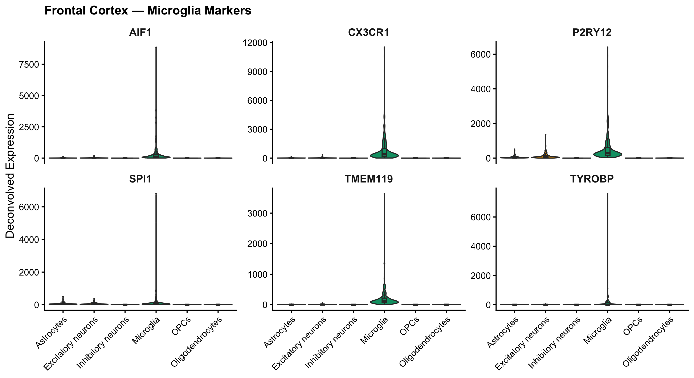
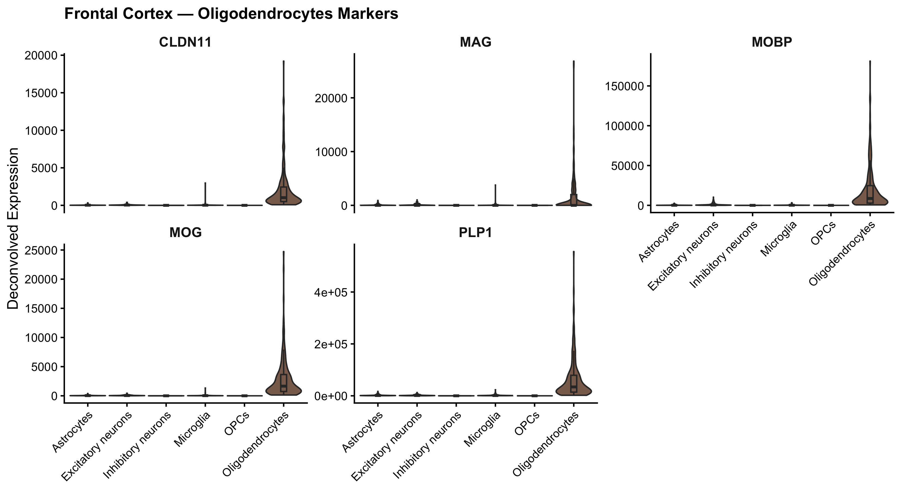
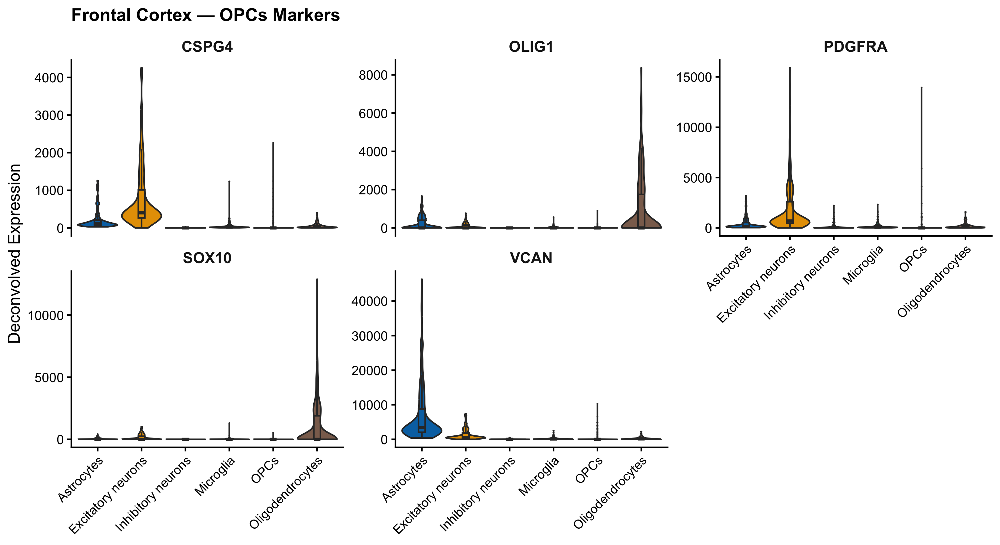
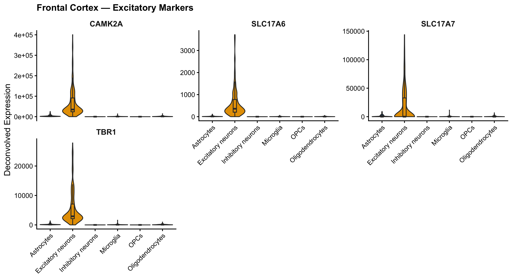
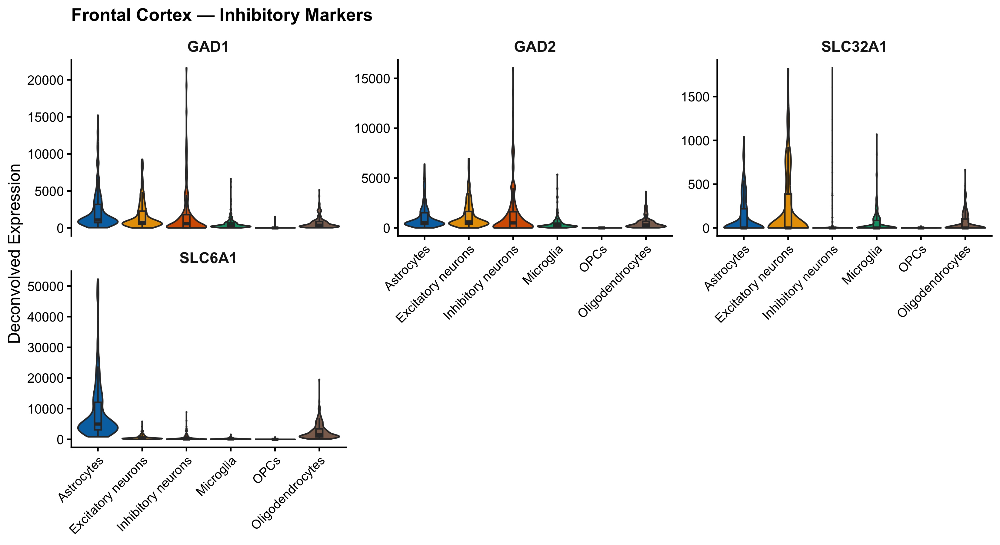
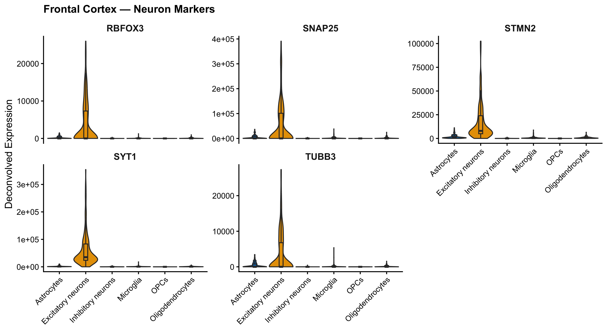
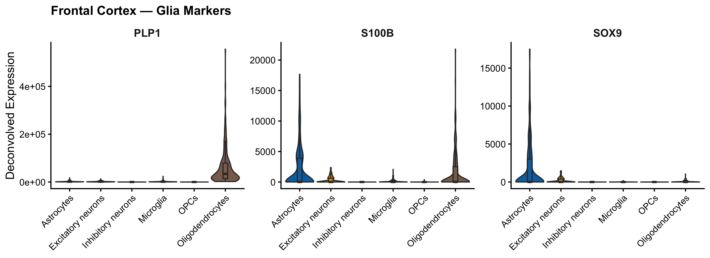
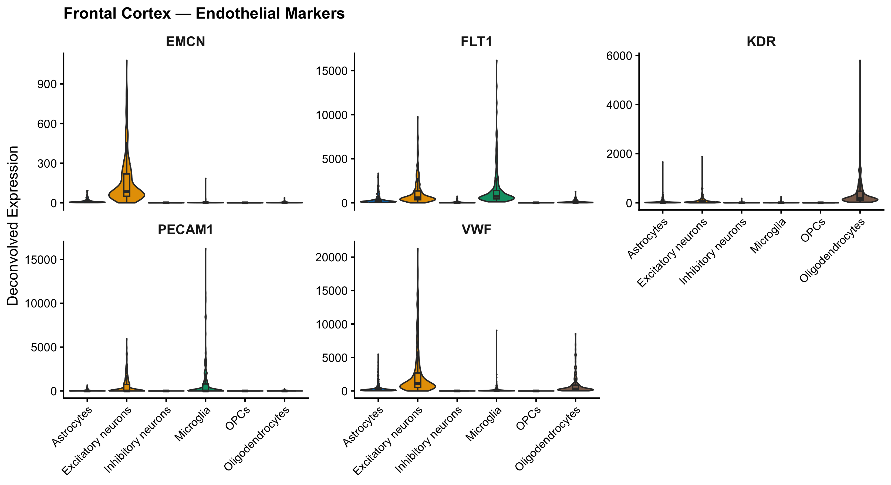
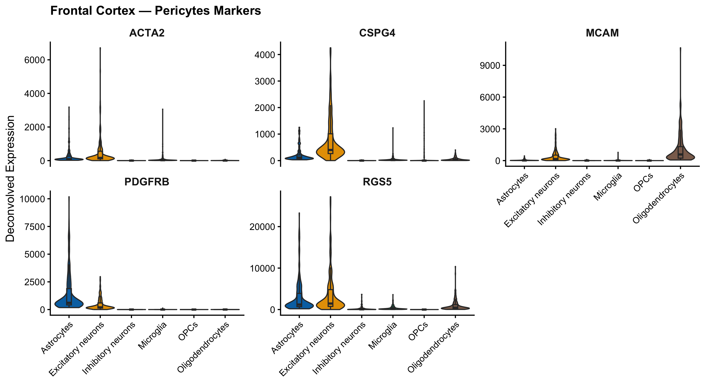

Violin plots showing known cell-type marker gene expression within each deconvolved cell fraction, validating that the deconvolution correctly separated major CNS cell populations. Samples with RIN < 6 excluded. 194 samples · 6 cell types.
Each deconvolved expression profile should display high expression of markers canonical to that cell type and low expression in others. The plots below use curated marker gene sets across 10 cell-type categories. A clean separation — high expression concentrated in the expected fraction — validates the deconvolution. Cross-contamination or flat distributions across all cell types suggest the deconvolution reference was not specific enough for those genes.
GFAP and AQP4 are among the most astrocyte-specific markers in the CNS. GFAP is the intermediate filament backbone of astrocytic cytoskeleton, markedly elevated in reactive astrogliosis. AQP4 (aquaporin-4) is the dominant water channel at astrocytic endfeet surrounding blood vessels. SLC1A2 (EAAT2) and SLC1A3 (EAAT1) are astrocytic glutamate transporters that clear synaptic glutamate — their loss is implicated in ALS-associated excitotoxicity. ALDH1L1 is a highly specific pan-astrocyte marker. Enrichment in the Astrocytes fraction validates astrocytic deconvolution quality.

AIF1 (IBA1) is the defining microglial histological marker — a calcium-binding actin-bundling protein enriched in resident brain macrophages. P2RY12 and TMEM119 mark homeostatic (quiescent) microglia and are downregulated upon activation — their presence confirms a baseline microglial signature. CX3CR1 (fractalkine receptor) is expressed on microglia and monocytes, mediating neuron–microglia communication. TYROBP (DAP12) and SPI1 (PU.1) reflect the myeloid transcriptional identity of microglia; variants in TYROBP are associated with late-onset Alzheimer's disease risk.

MBP (Myelin Basic Protein) and PLP1 (Proteolipid Protein 1) together constitute over 80% of CNS myelin protein by mass — they should dominate the Oligodendrocyte fraction. MOG (myelin oligodendrocyte glycoprotein) is expressed on the outermost myelin layer and is the antigen in MOG-antibody disease. MAG (myelin-associated glycoprotein) is enriched at the inner myelin loop near the axon. MOBP and CLDN11 (claudin-11) further specify mature myelinating oligodendrocytes. A strong, selective signal in the Oligodendrocytes fraction confirms that the deconvolution captured myelin-producing cells accurately.

PDGFRA (PDGF receptor α) is the canonical OPC surface marker used for isolation and identification. CSPG4 (NG2/MCSP) marks OPCs as well as pericytes, so some cross-signal is expected. VCAN (versican) is an extracellular matrix chondroitin sulfate proteoglycan expressed by OPCs in white matter. SOX10 spans the entire oligodendrocyte lineage from OPC to mature oligo and regulates both PDGFRA expression and myelination genes. OLIG1 drives OPC differentiation and remyelination. Some overlap with the Oligodendrocytes fraction is biologically expected as OPCs can commit to the mature lineage.

SLC17A7 (VGluT1) is the primary vesicular glutamate transporter in cortical excitatory neurons, marking corticofugal projection neurons. SLC17A6 (VGluT2) is expressed in subcortical excitatory populations. Together they define the glutamatergic identity of the Excitatory neurons fraction. CAMK2A (CaMKII-α) is a major postsynaptic kinase at excitatory synapses, critical for long-term potentiation. TBR1 is a T-box transcription factor that specifies layer VI cortical excitatory neurons and is also expressed in early glutamatergic neurons. In frontal cortex, this fraction predominantly captures pyramidal/projection neurons.

GAD1 and GAD2 encode the two isoforms of glutamic acid decarboxylase (GAD67 and GAD65), the rate-limiting enzymes for GABA synthesis. Both are highly specific to GABAergic interneurons. SLC6A1 (GAT-1) is the primary GABA plasma membrane transporter responsible for reuptake from the synapse. SLC32A1 (VGAT / SLC32A1) is the vesicular GABA transporter, packing GABA into synaptic vesicles. Enrichment of these four markers in the Inhibitory neurons fraction validates that cortical interneurons were correctly separated from excitatory populations.

Pan-neuronal markers should be enriched across both excitatory and inhibitory fractions. RBFOX3 (NeuN) is the canonical neuronal nuclear marker used in histology to count neurons. SNAP25 and SYT1 (synaptotagmin-1) are core synaptic vesicle release machinery components expressed in all neuron types. TUBB3 (β-III tubulin) is a neuron-specific tubulin isoform used to label neuronal cytoskeleton. STMN2 (SCG10) is a microtubule-associated protein important for axonal growth and repair; notably, STMN2 expression is disrupted by TDP-43 loss-of-function in ALS, making it a potential biomarker of ALS neurodegeneration.

SOX9 is a transcription factor expressed in both astrocytes and OPCs — signal in both fractions is expected and biologically meaningful. S100B is a calcium-binding protein expressed in astrocytes, Schwann cells, and some oligodendrocytes; its elevation in cerebrospinal fluid is a marker of brain injury. PLP1 is shared here with the oligodendrocyte panel as a reference — its enrichment specifically in the Oligodendrocytes fraction, with minimal signal in astrocytes, confirms good cell-type separation. Broad distribution across glial fractions (Astrocytes + Oligodendrocytes/OPCs) with low neuronal signal validates the glial compartment.

PECAM1 (CD31), VWF (von Willebrand factor), KDR (VEGFR2), FLT1 (VEGFR1), and EMCN (endomucin) mark vascular endothelial cells. Endothelial cells are not included as a separate fraction in this deconvolution, so their signal will be distributed across the nearest-neighbor cell types or diluted across all fractions. Any residual signal appearing in a specific cell type likely reflects contamination in the reference rather than true biological expression. This is expected — the deconvolution reference used here was not designed to capture the neurovascular unit.

PDGFRB is the most widely used pericyte marker. RGS5 and MCAM (CD146) further specify the pericyte identity. ACTA2 (α-smooth muscle actin) marks contractile pericytes. CSPG4 (NG2) is notable because it is also an OPC marker — any signal seen in the OPCs fraction for this gene likely reflects the shared NG2 expression between OPCs and pericytes rather than true pericyte deconvolution. As with endothelial markers, pericytes are not a defined cell type in this deconvolution, so non-specific distribution is expected.
